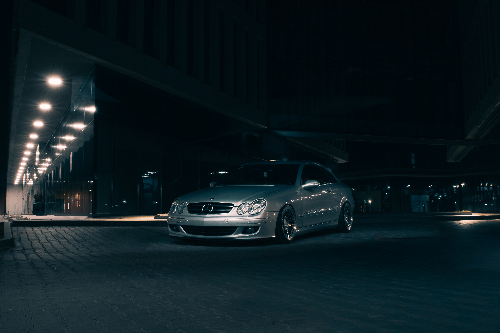
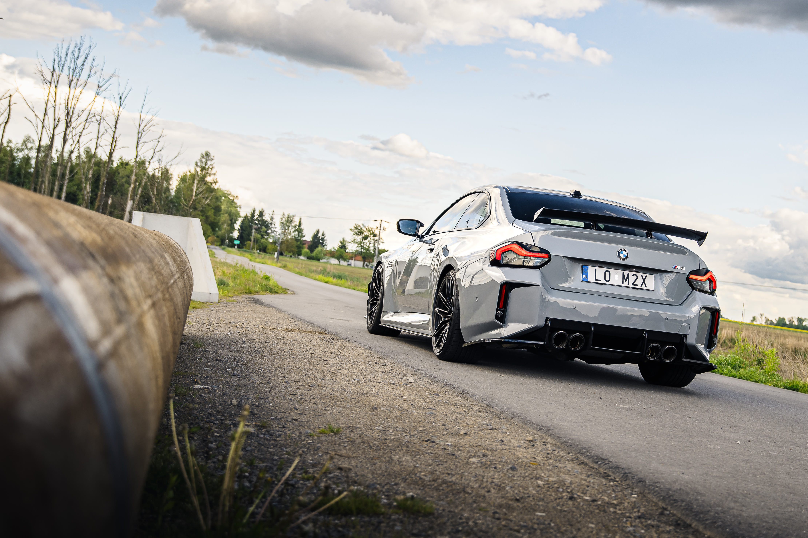
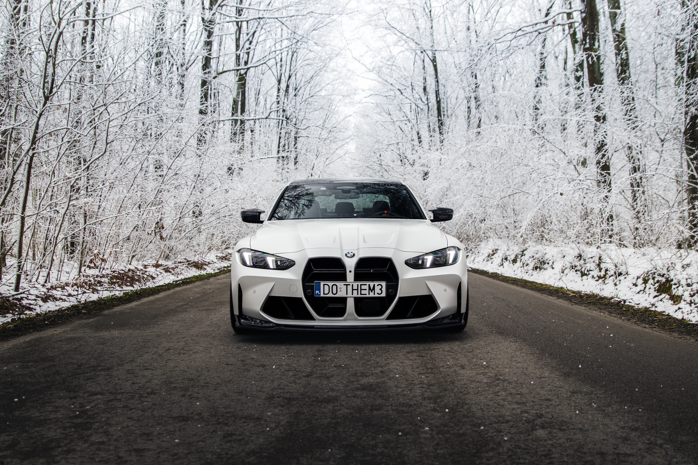
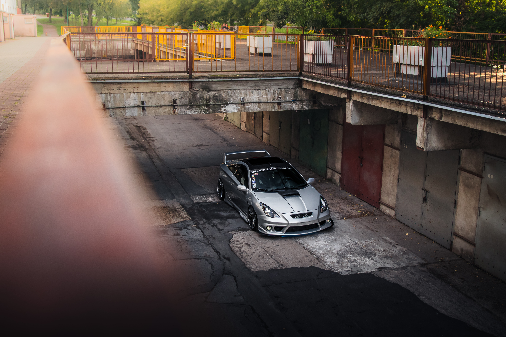
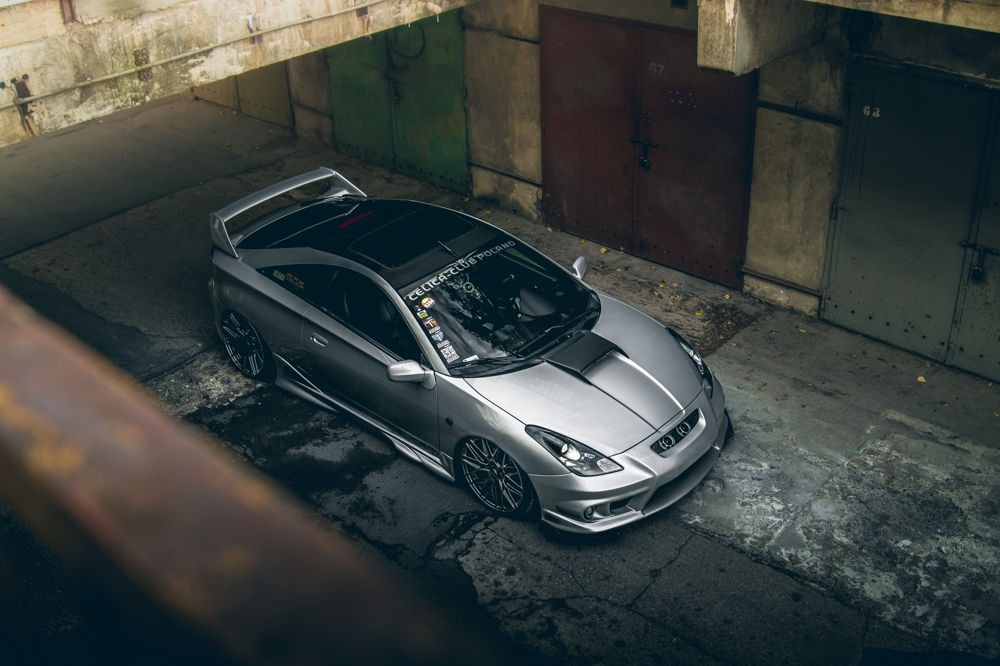
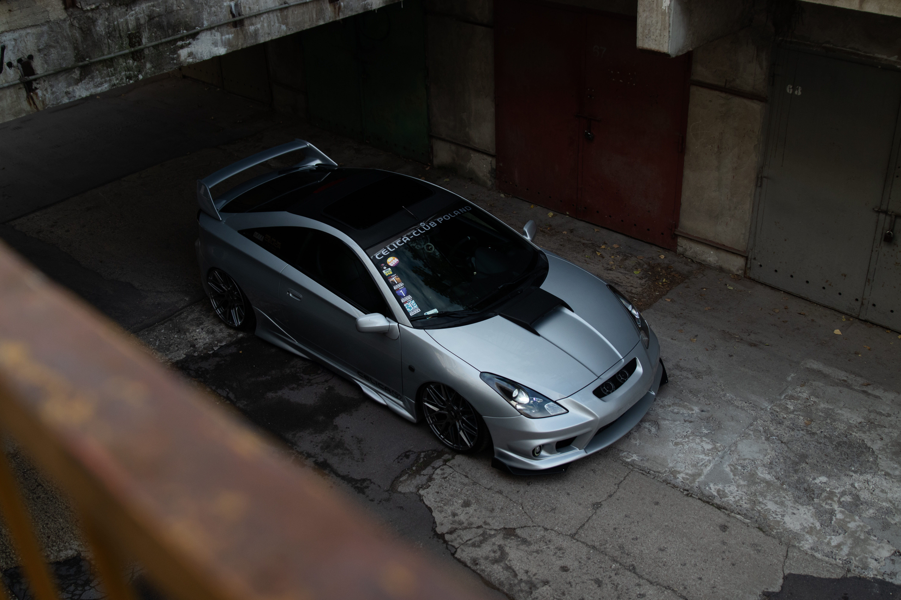

Cześć! Nazywam się Jan Wierzchowski. Specjalizuję się w fotografii motoryzacyjnej i miejskiej. Lubię mocny kontrast, czyste linie i naturalne kolory. Pracuję w Warszawie i okolicach.
Obczaj to! Chwila obróbki w programie do edycji takich jak Lightroom i zdjęcia mogą nabrać charakteru!


Ostatnie posty
Sprawdzaj Instagram by zobaczyć najlepsze moje prace! Oraz na Facebook, gdzie publikuje albumy z eventów motoryzacyjnych!